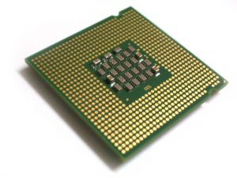

处理器
物理结构
CPU包括运算逻辑部件、寄存器部件和控制部件等。
逻辑部件
英文Logic components；运算逻辑部件。可以执行定点或浮点算术运算操作、移位操作以及逻辑操作，也可执行地址运算和转换。
寄存器
寄存器部件，包括寄存器、专用寄存器和控制寄存器。 通用寄存器又可分定点数和浮点数两类，它们用来保存指令执行过程中临时存放的寄存器操作数和中间（或最终）的操作结果。 通用寄存器是中央处理器的重要部件之一。
控制部件
英文Control unit；控制部件，主要是负责对指令译码，并且发出为完成每条指令所要执行的各个操作的控制信号。
其结构有两种：一种是以微存储为核心的微程序控制方式；一种是以逻辑硬布线结构为主的控制方式。
微存储中保持微码，每一个微码对应于一个最基本的微操作，又称微指令
CPU制造工艺的微米是指IC内电路与电路之间的距离。
制造工艺的趋势是向密集度愈高的方向发展。密度愈高的IC电路设计，
意味着在同样大小面积的IC中，可以拥有密度更高、功能更复杂的电路设计。
主要的180nm、130nm、90nm、65nm、45纳米、22nm，intel已经于2010
年发布32纳米的制造工艺的酷睿i3/酷睿i5/酷睿i7系列并于2012年4月发布了
22纳米酷睿i3/i5/i7系列。并且已有14nm产品的计划
（据新闻报道14nm将于2013年下半年在笔记本处理器首发。）